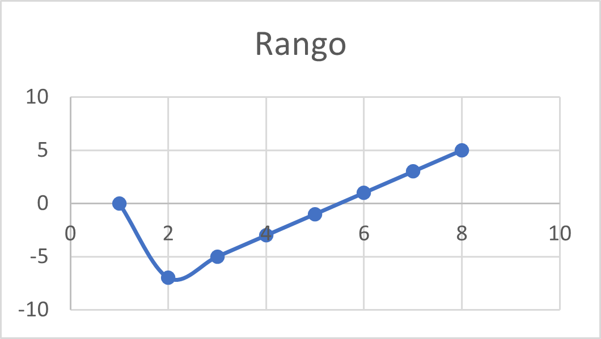

Informacion general
Cualquier función cuyo rango de conjunto incluya sólo números reales esllamada una función valorada real o simplemente una función real.
Especialmente estudiada bajo el cálculo, una función valorada real se centra en las integrales, las desigualdades en general y sus derivadas.
Una función racional, por ejemplo, cae bajo la categoría de una función valorada real.
Al igual que en cualquier otra función, tambiéna una función real pueden realizársele las operaciones básicas, tales como suma, resta, multiplicación, etc.
Aunque el denominador no sea igual a cero, la operación de división se puede realizar en tales funciones.
El resultado de estas operaciones es otra función, que puede no ser una función real en algunos casos.
Definicion del tema
Una función real de variable real es una regla que asigna a cada número real en un conjunto de entrada, llamado dominio, un número real en un conjunto de salida, llamado rango. Se puede denotar como f(x), donde x es la variable independiente y f es la función que define la relación entre x y su imagen f(x).
En términos matemáticos, una función real de variable real se puede escribir como:
f: A -> B, donde A es el conjunto de entrada (dominio) y B es el conjunto de salida (rango).
Representación gráfica de una función real de variable real
La representación gráfica de una función real de variable real es una forma visual de mostrar la relación entre el dominio y el rango. Para graficar una función, se dibuja un plano cartesiano con el eje x representando el dominio y el eje y representando el rango. Luego, se dibuja una línea o curva que representa la función.
Conceptos relacionados con funciones reales de variable real
Aquí hay algunos conceptos adicionales relacionados con funciones reales de variable real que es posible que desees conocer:
1. Dominio: El conjunto de valores de entrada para los cuales la función está definida.
2. Rango o imagen: El conjunto de valores de salida correspondientes a los valores en el dominio.
3. Gráfica: La representación visual de una función en el plano cartesiano.
4. Función par: Una función f(x) es par si f(-x) = f(x) para todo x en el dominio. Esto significa que la gráfica de una función par es simétrica respecto al eje y.
5. Función impar: Una función f(x) es impar si f(-x) = -f(x) para todo x en el dominio. Esto significa que la gráfica de una función impar es simétrica respecto al origen.
Fórmulas importantes relacionadas con funciones reales de variable real
Aquí hay algunas fórmulas importantes relacionadas con funciones reales de variable real:
1. Función lineal: f(x) = mx + b, donde m es la pendiente y b es la intersección con el eje y.
2. Función cuadrática: f(x) = ax^2 + bx + c donde a, b, y c son constantes reales. El término cuadrático ax^2 es el término de mayor grado y determina la concavidad de la función. El término lineal bx representa la pendiente de la función y c es la ordenada al origen.
La gráfica de una función cuadrática es una parábola. Si a > 0, la parábola abre hacia arriba, y si a < 0, la parábola abre hacia abajo. El vértice de la parábola se encuentra en el punto (-b/2a, f(-b/2a)), que es el punto más alto o bajo de la parábola dependiendo de la dirección en que se abre.
3. Función exponencial: f(x) = a^x, donde a es la base de la exponencial. Si a>1, la función es creciente. Si 0 < a< 1, la función es decreciente. La gráfica de una función exponencial es una curva que se acerca al eje x pero nunca lo alcanza.
4. Función logarítmica: f(x) = log_a(x), donde a es la base del logaritmo. La gráfica de una función logarítmica es una curva que se acerca al eje y pero nunca lo alcanza.
5. Función trigonométrica: Hay tres funciones trigonométricas comunes: la función seno, la función coseno y la función tangente. La gráfica de estas funciones es una curva oscilante que se repite a intervalos regulares.
6. Función valor absoluto: f(x) = |x|. La gráfica de la función valor absoluto es una V invertida, donde la parte inferior de la V toca el origen.
7. Función raíz cuadrada: f(x) = sqrt(x). La gráfica de la función raíz cuadrada es una curva que comienza en el origen y se extiende hacia la derecha.
Ejemplos
a. Consideremos la función real de variable real f(x) = x² - 4.
1. El dominio de esta función es todos los números reales, ya que podemos evaluar f(x) para cualquier valor de x.
2. Para encontrar algunos puntos en la curva, podemos evaluar la función para algunos valores de x, como x=0, x=1, x=-1, x=2 y x=-2:
• f(0) = 0² - 4 = -4, lo que significa que el punto (0, -4) está en la curva.
• f(1) = 1² - 4 = -3, lo que significa que el punto (1, -3) está en la curva.
• f(-1) = (-1)² - 4 = -3, lo que significa que el punto (-1, -3) está en la curva.
• f(2) = 2² - 4 = 0, lo que significa que el punto (2, 0) está en la curva.
• f(-2) = (-2)² - 4 = 0, lo que significa que el punto (-2, 0) está en la curva.
3. Ahora podemos unir los puntos para formar una curva suave que representa la función completa. La curva es una parábola hacia arriba que corta el eje y en el punto (-4, 0).

b. Ejemplo 2: f(x) = x² - 4, evaluada de [-3,3]
Evaluar el rango de la función, donde el dominio es el valor de X.
c. Ejemplo 4: Cos(3x+1), evaluada de [-3,3]
Evaluar el rango de la función, donde el dominio es el valor de X.